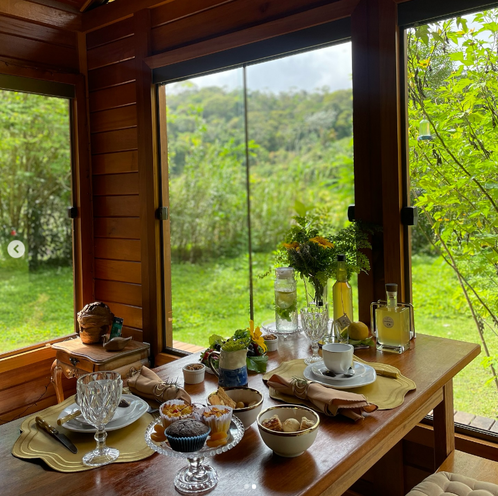
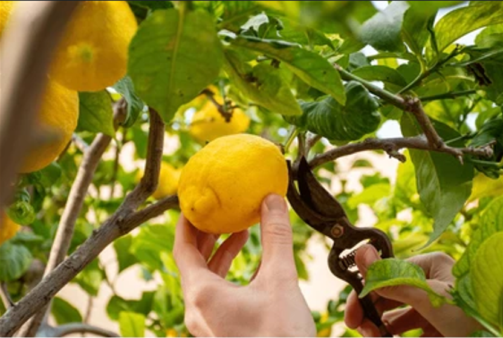
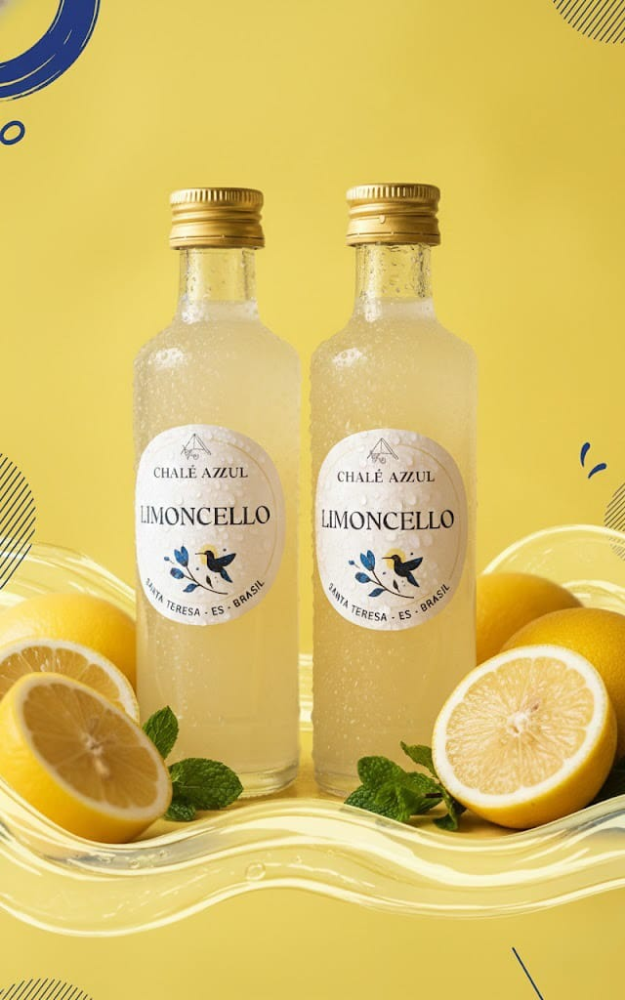

Como é a experiência?
Limoncello originario da região da Campânia, especialmente na costa amalfitana, o limoncello é apreciado como um digestivo após as refeições e é conhecido por seu sabor refrescante e cítrico. O limoncello é uma bebida alcoólica tradicional italiana feita a partir da infusão de cascas de limão em álcool, geralmente com adição de açúcar.
Brunch

Estaremos esperando você com um Brunch dos melhores produtos locais
Colheita do Limão

Colha o limão siciliano direto do pé e sinta o frescor, o aroma e o sabor autêntico dessa experiência única
Produza seu próprio Limoncello

Descubra o passo a passo da produção do seu Limoncello.
Refrescante, aromático e feito para celebrar o melhor de Santa Teresa.
O Limoncello Chalé Azzul nasce do equilíbrio perfeito entre o limão siciliano e o cuidado artesanal, resultando em um sabor leve, cítrico e marcante.
Sirva bem gelado e transforme qualquer momento em uma experiência italiana, com alma capixaba.